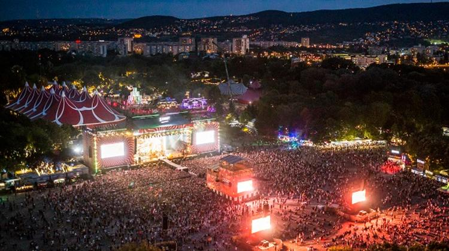
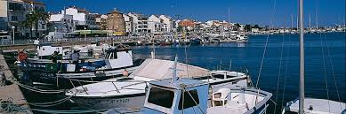

Holiday destinations
I am fortunate enough to have visited many different, beautiful countries around the European region. Among my favourite destinations was Budapest, which
is located in the heart of Hungary. We arrived here on our 6th year holiday to visit the popular festival named Sziget. Budapest's friendly people, warm climate and great tourist
sites made sure our time in Hungary was well spent. Other destinations that i have thoroughly enjoyed was on the lake Garda in Italy and Paris in France. Both these places guarantee
quality whether that be in terms of food, culture or people. I would highly recommend any of these extraordinary places if you have'nt yet visited them. The places in which i would next
like to travel to/ visit is all of the regions in south America, preferably Columbia, Brazil and Argentina. these regions fascinate me as they are steeped in history and tradition while also obtaining
a warm weather climate. It would truly make for a great holiday